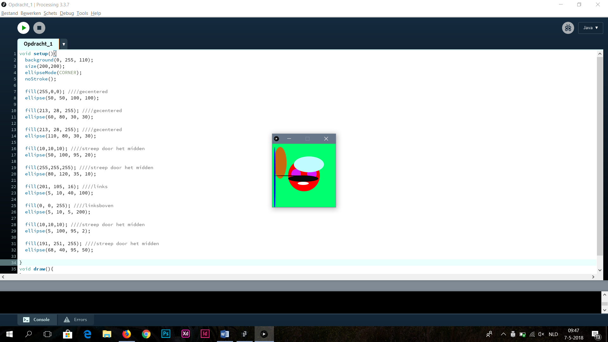
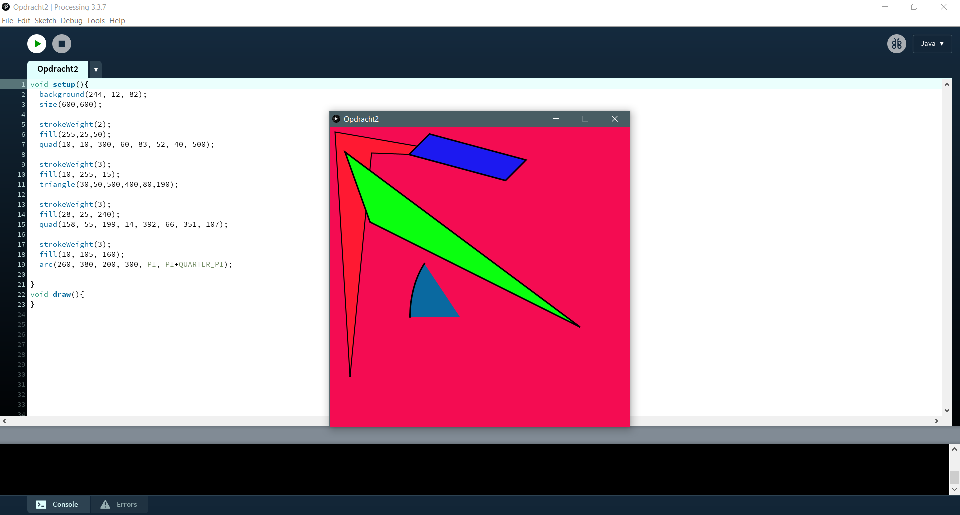
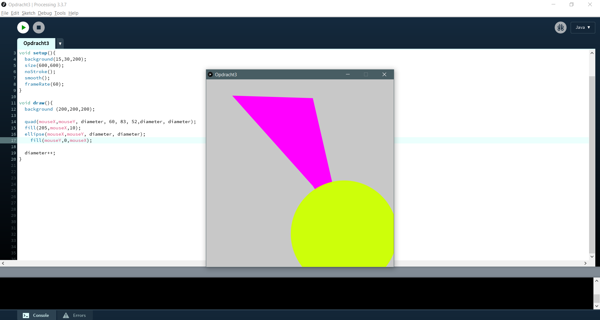
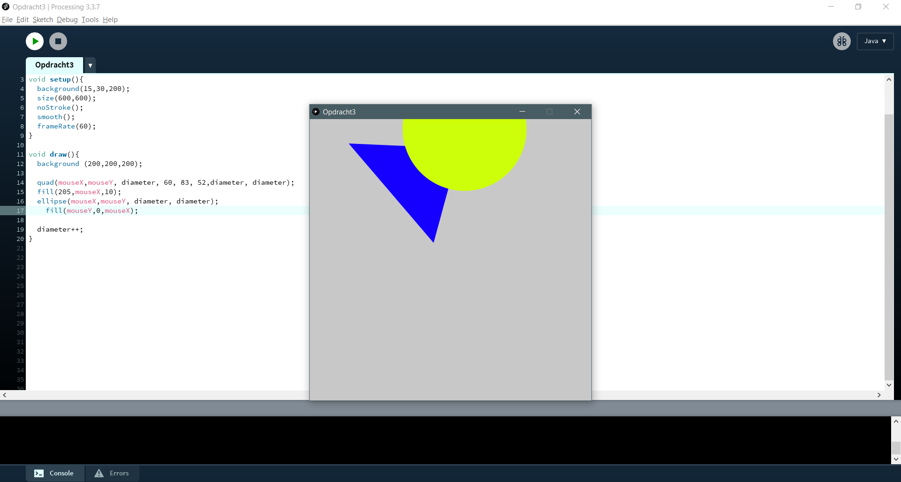
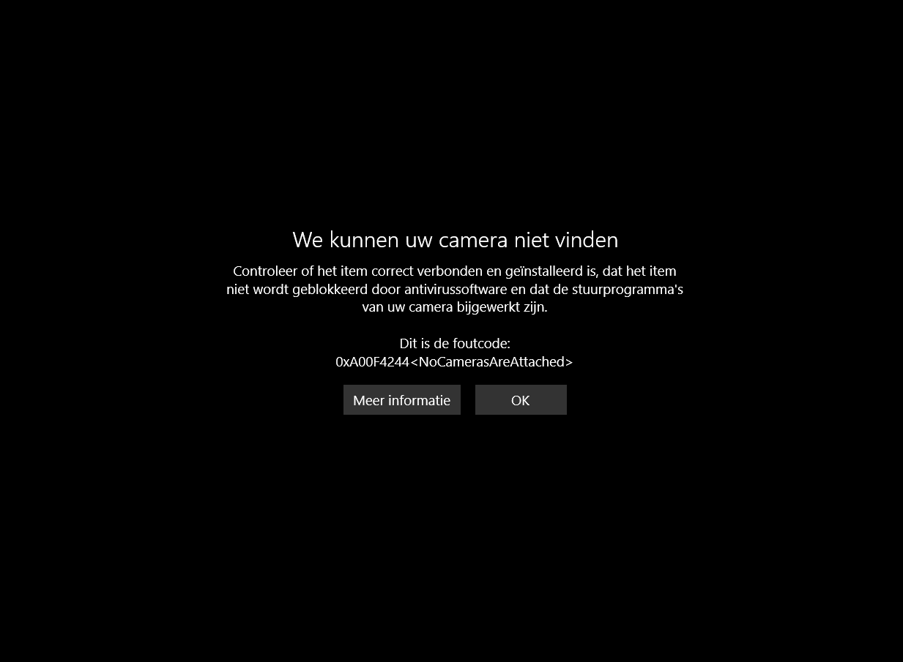

Opdracht 1
Write a program that draws three (or more) ellipses:
- at various locations
- with various colors
- various widths and heights •with and without borders (of various colors)

Opdracht 2
Write a program that draws:
- at least four different shapes (not circles)
- in various colours
- at various location

Opdracht 3
Write a program that draws at least two different shapes, with various colours and make them interactive:
- Draw a line where one of the ends follows the mouse
- Draw a circle where the colour is related to the location of the mouse
- Draw a rectangle with the size related to the x location of the mouse


Computer Vision 1
Alle opdrachten vanaf hier zijn niet gelukt, omdat de webcam van mijn apparaat het niet doet. Ik heb geprobeerd een driver te installeren, maar er wordt geen enkele informatie gegeven welke driver ik nodig heb en de driver camera bestaat niet...
